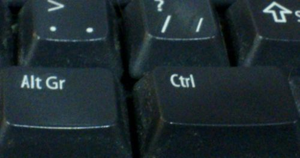

FontForge lets you assign custom hotkeys to the menus and other actions. Default hotkeys are provided for the menus in all windows which follow familiar key assignments such as Control+O to open a file and Control+c to "copy" something. The current hotkey for each menu item are shown in the menu itself to help you learn existing bindings and see if your modification to the bindings are as you expect.
The hotkey system allows you to customize the hotkey for anything that appears in the menus. You can freely change the hotkey for a menu item or add one if you find you are using a menu item frequently. Your settings for hotkeys are read from and stored in the ~/.FontForge/hotkeys file. In it's most basic form this file is a sequence of lines of the form action:key. A large default hotkeys file is provided with FontForge in the hotkeys/default file.
The below fragment of ~/.FontForge/hotkeys will hopefully provide a nice example to get you started creating your own hotkey bindings. As you can see the action part starts with "CharView.Menu.", meaning that this action is to invoke a menu on a specific window type. You can assign a different hotkey to the same menu item in two different window types. For example, the glyph window might have control+o to show font information, whereas the fontview might retain control+o to mean open a font.
The first action in the below file, Point.Tools.Ruler, will invoke the Ruler menu item which is in the Tools menu, which is itself in the Point top level menu of the charview window (Glyph window). Notice that the key does not need to have a qualifier such as control or alt. Having no modifier for a hotkey is currently limited to the glyph window.
CharView.Menu.Point.Tools.Ruler: r
CharView.Menu.Point.Tools.Pointer: v
CharView.Menu.View.Show.Tab.Tab0: Ctl+1
CharView.Menu.View.Show.Tab.Tab1: Ctl+2
CharView.Menu.View.Zoom in: Shft++
CharView.Menu.View.Zoom in: z
CharView.Menu.View.Zoom in: =
CharView.Menu.Point.Tools.HVCurve: 1
+CharView.Menu.Point.Tools.G2: 1
Continuing down the list you see the use of Ctl+1 to select a specific tab in the glyph window. This is followed by three key bindings, any of which will zoom the display to a higher magnification level.
When reading hotkeys files at startup, FontForge will first load many system defaults and then your ~/.FontForge/hotkeys file. Each file is processed from the first line to the last line. When reading these hotkey files, it might be the case that two or more lines have the exact same hotkey. For example, the system default is Control+o to open a file. You might like to override that hotkey to open the font info dialog instead. When FontForge is reading hotkeys files, if a hotkey is encountered that is already in use, the current action for that hotkey is replaced with the new action. So if you have the below line in your ~/.FontForge/hotkeys file then Control+o will open the font info dialog instead of trying to open a font.
CharView.Menu.Element.Font Info...:Ctl+o
If you want to add an action for a hotkey rather than replace the current action, prefix the line with a "+" character as the Tools.G2 line does in the above example. This allows the "1" key to invoke both the Tools.HVCurve and Tools.G2 menu items. In this case only one menu will perform a task depending on if spiro mode is active.
FontForge recognizes the following standard modifiers: Alt+, Ctl+, Shft+, CapsLock+, Opt+ (the last corresponds to the Option key on the mac keyboard, Cmd+ for the mac Command key Note: This can only be used by an X program if the X11 application does not appropriate it -- this can be configured in the X11 Preferences).
Other than the CharView window type, there are FontView and MetricsView.
As noted in hotkey assignment you can nominate the hotkeys which you prefer for all items in any menu of FontForge. Some default hotkeys are shipped with FontForge so that you do not have to assign any keys yourself unless you want to make changes. The defaults are shown below:
Hot Keys are now configurable through a gettext based mechanism.
The above descriptions assume you are using a keyboard for an IBM pc or compatible. But different keyboard vendors label their keys differently and different versions of X may map them differently.
I am aware of the following significant differences:
FontForge will attempt to guess what keyboard you are using and produce menus with hot-key indicators that match the host machine. If you are displaying on a different machine from the one you are running on the menu names may be wrong. You can fix this up with the keyboard resource, or the -keyboard command line argument.
| Tool | Modifier | Result | Tool | Modifier | Result | ||||
|---|---|---|---|---|---|---|---|---|---|
| pointer | Shift | Constrain horizontal/vert or italic angle/45° | Magnify |
|
|
||||
| Alt | Select control points before normal points | ||||||||
| Shift-Alt | Constrain control point motion to original angle from point | ||||||||
| freehand | Shift | Constrain horizontal/vert/45° | scroll | Shift | Constrain scroll either in single direction or by same amount in both directions |
||||
| add curve | Shift | Constrain horizontal/vert/45° from last point | add corner | Shift | Constrain horizontal/vert/45° from last point | ||||
| add tangent | Shift | Constrain horizontal/vert/45° from last point | pen | Shift | Constrain points h/v/45 from last point Constrain control points h/v/45 from point |
||||
| knife | Shift | Constrain horizontal/vert/45° | ruler | Shift | Constrain measurement to one direction | ||||
| Alt | Give current position more accurately | ||||||||
| scale | Shift | Constrain either to scale along x or y axis or scale both axes the same |
flip | ||||||
| rotate | Shift | Constrain rotation to a multiple of 45° | skew | ||||||
| 3d rotate | perspective | ||||||||
| rect/elipse | Shft | square/circle | polygon/star | Shift | Constrains so that one of the vertices is horizontal/vertical/45° |
Control |
Makes the arrow keys scroll |
| Alt | Makes the arrow keys move by ten times as much as they would otherwise |